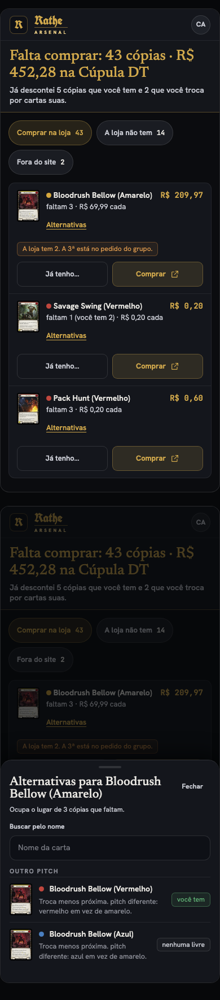
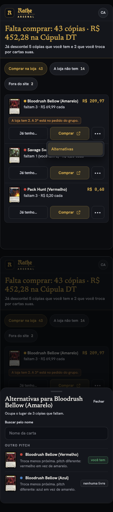
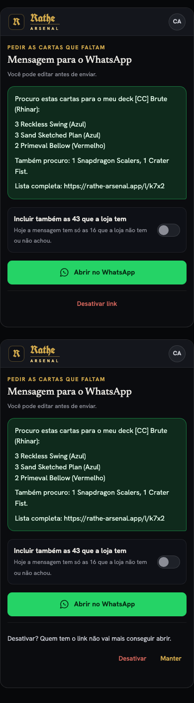
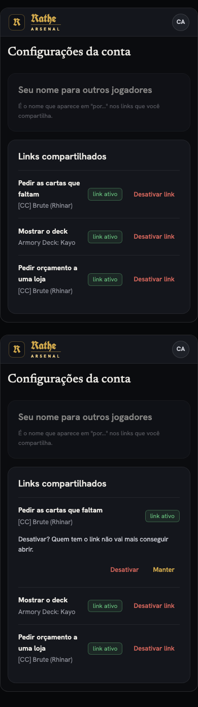
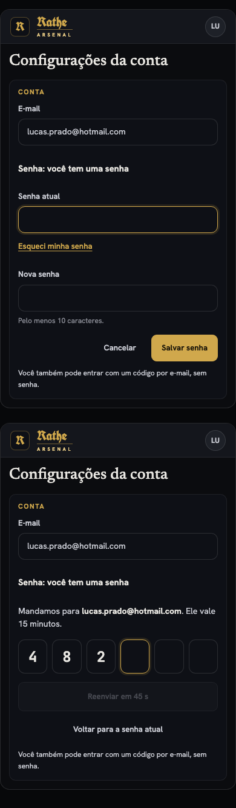
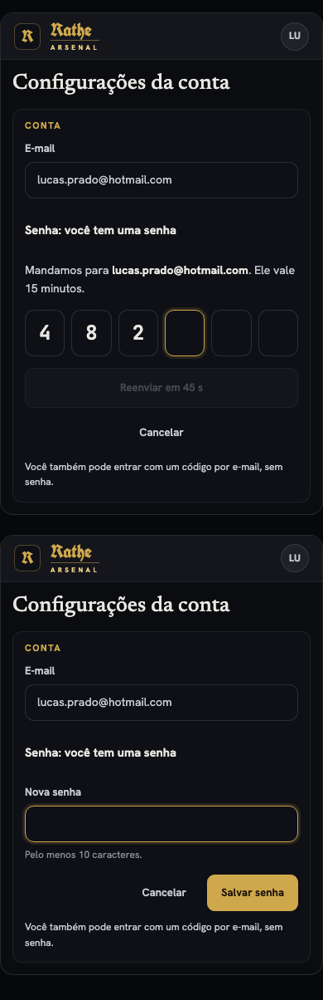
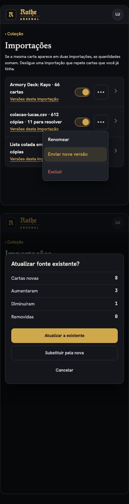
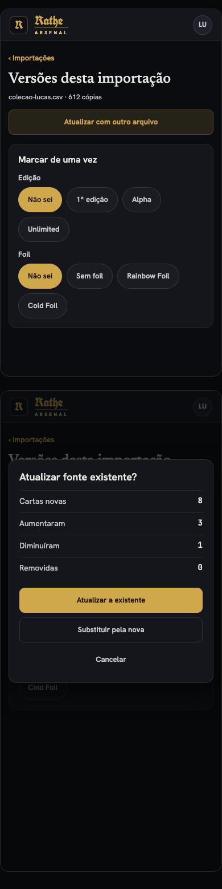

Um link pequeno embaixo do nome, em cada linha. Embaixo, a folha aberta.

Um botão "•••" ao lado de "Comprar", com "Alternativas" no menu. Embaixo, a folha aberta.

Uma linha "Desativar link" embaixo de "Abrir no WhatsApp". Embaixo, a confirmação.

Uma seção "Links compartilhados", com "Desativar link" em cada um. Embaixo, a confirmação.

Campo "Senha atual" e "Esqueci minha senha", que manda um código. Embaixo, a tela do código.

A tela do código de 6 dígitos primeiro. Embaixo, o formulário de nova senha que já existe.

Na lista de Importações. Embaixo, a pergunta que já existe quando o arquivo se parece com uma importação.

"Atualizar com outro arquivo" no alto da página "Versões desta importação". Embaixo, a mesma pergunta.
